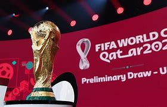
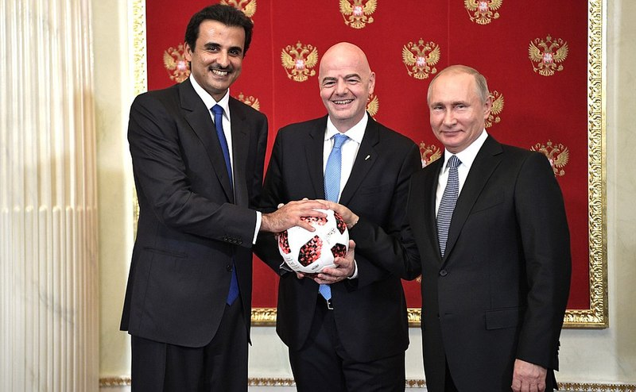
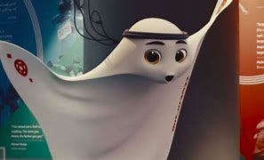

CATAR 2022
La Copa Mundial de Fútbol de la FIFA Catar 2022 es la vigésimo segunda edición de la Copa Mundial de Fútbol masculino organizada por la FIFA. Se está desarrollando desde el 20 de noviembre al 18 de diciembre en Catar, que consiguió los derechos de organización el 2 de diciembre de 2010 Es la tercera vez que el torneo se disputa en el continente asiático tras la edición de 2002 jugada en Corea del Sur y Japón y la de Rusia 2018 (aunque esta última contaba con una sola sede en territorio asiático);y la primera que se celebra en Asia Occidental. También por primera vez, el torneo tiene lugar en Oriente Próximo, en un país árabe y de mayoría musulmana, así como el de menor extensión territorial.

Los países del Consejo de Cooperación del Golfo (CCG) han dado su respaldo a que Catar sea la sede del Mundial de 2022, ante las críticas de corrupción despertadas. Una alianza con la Federación Española de Fútbol que implicó en particular al F. C. Barcelona y al Real Madrid ya que los patrocinadores de ambos equipos son originarios de medio oriente fue una de las bases que permitió a Catar obtener así el apoyo de varios países latinoamericanos y conseguir la candidatura para obtener el Mundial de 2022.
En 2011, Joseph Blatter anunció que este mundial podría ser adelantado a enero de 2022 o postergado a noviembre del mismo año, debido a que en Catar en verano las temperaturas llegan a 50 °C y así podría protegerse a los futbolistas y a todos los relacionados con el Mundial. Los organizadores anunciaron que contarían con aire acondicionado en los estadios debido al clima árido cálido, excesivamente caluroso en junio-julio.

Inaguracion
La ceremonia de apertura del torneo estuvo a cargo de Jungkook, miembro del grupo de K-pop, BTS, hizo un dúo con el cantante catarí Fahad Al Kubaisi, y que además contó con la participación del actor estadounidense Morgan Freeman junto con el influencer catarí Ghanim Al-Muftah.Era la primera vez que se recitaba el Corán como parte de la ceremonia de apertura.
Mascota
La mascota oficial del Mundial de Catar 2022 es La'eeb. Fue presentada el 1 de abril de 2022 en el sorteo para definir los grupos.
